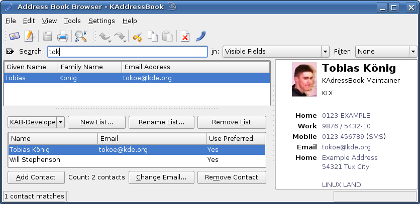

Extensions are implemented as plugins in KAddressBook, so 3rd-party developers can provide more of them. At the moment we already have three extensions:
- None
This selection shows no extension. This is a good default selection, if you're not using any of the other extensions because it saves space.
- Contact Editor
Similar to the contact editing dialog, but designed to allow contacts to be edited quickly.
- Address Books
This extension shows you a list of available address book resources. You can check/uncheck them to show/hide the entries of a specific address book.
It is also possible to Add, Edit or Remove an resource, for more information about this see how to configure resources.
- Distribution List Manager
This extension provides easy management of email distribution lists: just create a new list and select a contact in the view; then, after clicking , the selected contact is part of the distribution list. A simpler way is to drag a contact from the view and drop it over the distribution list manager. See Settings Menu about how to add an extension.

The main window with distribution list extension.